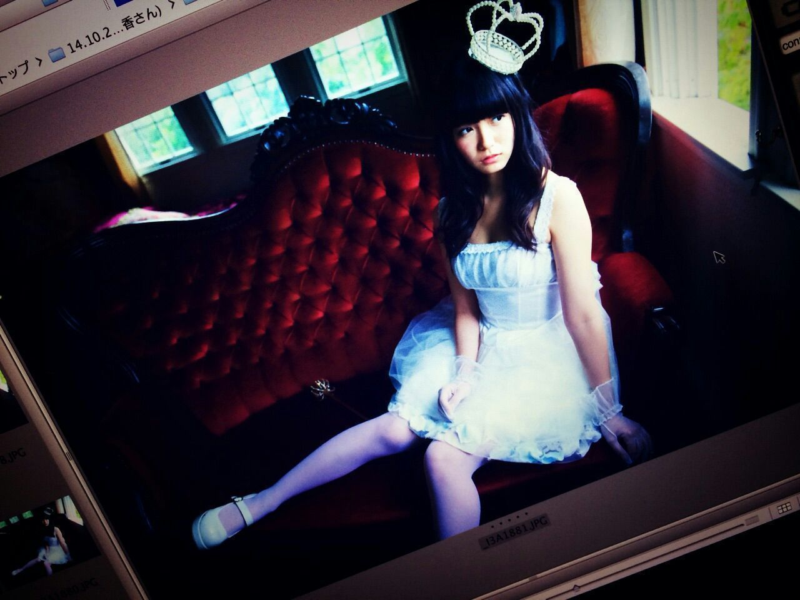
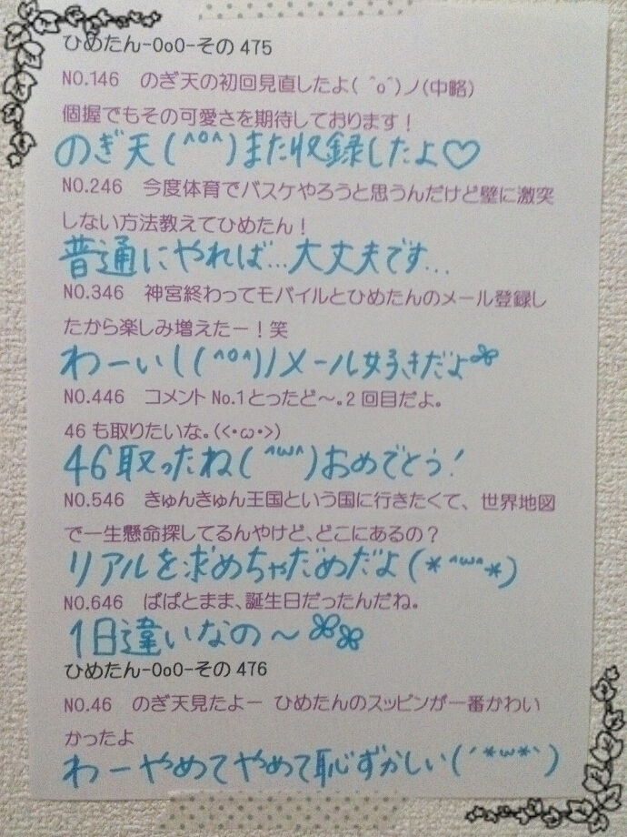
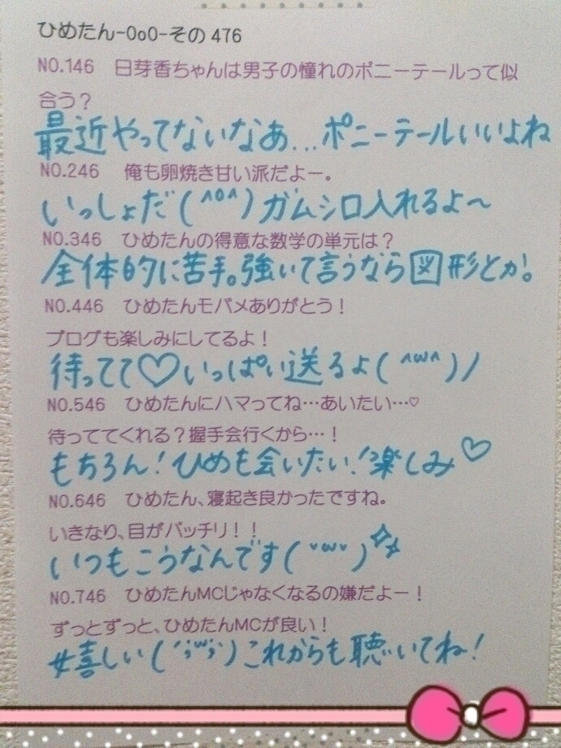

| 2014/11 27 Thu | ひめたん-OoO-その502 |

UTB 1月号に載ってるよ\( ˆoˆ )/
これ言うの何回目でしょう～＊
みんなは見てくれたかな？
ひめたんが「姫」になっちゃおう！企画
お洋服もセットも小物も
全部メルヘンで
撮影中ずっとうきうきでした♡
スタッフさんたちも
「ひめ～準備ができましたよ！」とか
「ひめ～こちらにどうぞ！」とか
言ってくださるものだから
この日は写真撮ってない時も
ずっとお姫さまごっこしてたの♡
ソログラビアは貴重な機会で
楽しみにしてたのもあるし
何よりUTBさんにまた
登場できたのが
もう本当に幸せでした( ˇωˇ )
11ヶ月ぶりの登場なんだけれども
前回とはまた違った雰囲気だし
私自身成長した姿を
見ていただけたらいいなと思います☆
よろしくお願いしますっ
UTBさんのインスタに
ひめたんのメイキングも
アップされました( ´ ▽ ` )
http://t.co/LfBBIDrbMp

「超能力研究部の3人」
みなさんより一足お先に
試写室で観ました❁
ふふふ、何というか
みなさんにも早く観てほしい
私が感想を言うよりも、観て！
3人とも名女優(＊´ω`＊)
あ、ひとつ
前回の日記で書いてなかったこと
握手会で本当に
たくさんのひとが並んでくださった
って聞きました(゜ω゜)♡
嬉しいな～＊
みんな本当にありがとうねっ

 受験が終わったからじゃないと
受験が終わったからじゃないと
握手会行けないから
めっちゃ話が遅れてるけどいい？
もちろんもちろん(´-ω-`)♡
気長に待ってるよ～
応援してます！
ひめたんはいちごはヘタ側からたべる？
それともヘタじゃない側から？
ヘタ側から！
いちごは先端が一番甘いって
聞いたことあるよ(＊´ω`＊)
もうどこ行ってもひめたんビームだ(笑)
ひめたんビームは世界を救うね(笑)
あれ、もしかしてばかにしてる？
これだけはどうしても克服できない
(するつもりもない)食べ物はあるかな？
ピーマン。
ピーマンだけはいくつになっても
食べられるようになる自信がない......
ひめたん的に個別握手会は
何部がおすすめ？
いつ来てくれても嬉しいけれど
朝はちょっと寂しいから
来てくれると嬉しいかなあ(＊´v`＊)
1部は下ろし巻き
4部はツインテール
毎回ってわけでもないけど、
だいたいこれ鉄板。
握手会にクイズ王さん来てたの？
らしいね！お会いしたかった！
ひめは4部までで帰っちゃうんだけど
古川さんは5部にいらしたって
聞きましたよ～＊
ひめたんテラフォーマーズ
見てるんだね！！！
ひめたんは誰好き？
アドルフさん！シーラちゃんも好き( ´•̥ω•̥` )
ひめたんの日記の
コメント欄下２ケタに46を踏んだ方へ
手書きでコメ返するコーナー
＼ ひめたん46 ／



いつもたくさんのコメント
ありがとうございます\❁/
紅白歌合戦
みんなに出演してもらいたかった
いくちゃんにセンターで
あの歌を届けて欲しかったなあ
今は12月のライブに向けて
みんなで一丸となって
頑張るとき。
(＊´・ω・＊)
コメント(907)
2014/11/27 23:36